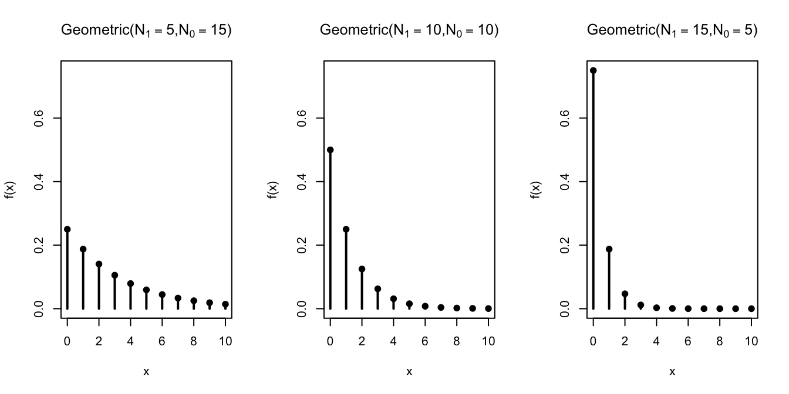

Lesson 14 Geometric Distribution
Motivating Example
In the casino game craps, after the “point” has been set, two dice are rolled repeatedly until either the “point” or a 7 comes up, at which time the round ends. Suppose the point is 4. What is the probability that it takes more than 6 rolls for the round to end?
We can calculate the probability that the round ends on a given roll by directly counting the 36 possible outcomes of two dice: \[ P(\text{roll a 4 or a 7}) = \frac{9}{36}. \] But how do we use this to determine the probability that it takes more than 6 rolls for the round to end?
Theory
Theorem 14.1 (Geometric Distribution) If a random variable can be described as the number of draws, with replacement, from the box \[ \overbrace{\underbrace{\fbox{0}\ \ldots \fbox{0}}_{N_0}\ \underbrace{\fbox{1}\ \ldots \fbox{1}}_{N_1}}^N \] until a \(\fbox{1}\)s is drawn, then its p.m.f. is given by \[\begin{equation} f(x) = \dfrac{N_0^{x-1} \cdot N_1}{N^x}, x=1, 2, 3, \ldots \tag{14.1} \end{equation}\] where \(N = N_1 + N_0\) is the number of tickets in the box.
We say that the random variable has a \(\text{Geometric}(N_1, N_0)\) distribution, and \(N_1\), \(N_0\) are called parameters of the distribution.
Equivalently, (14.1) can be written as \[\begin{equation} f(x) = (1-p)^{x-1} p, x=1, 2, 3, \ldots, \tag{14.2} \end{equation}\] where \(p = N_1 / N\) is the proportion of \(\fbox{1}\)s in the box. So we can also say that the random variable has a \(\text{Geometric}(p)\) distribution, where \(p\) is the parameter.Note that in contrast to the hypergeometric and binomial distributions, there is no upper bound on the possible values of the geometric distribution. We could keep drawing \(\fbox{0}\)s, so in theory, we might need to wait an arbitrarily long time to get a \(\fbox{1}\).
We will derive the formulas (14.1) and (14.2) later in this lesson. For now, let’s see how these formulas can be used to solve problems.
Example 14.1 (The Craps Problem) Let’s model each roll as a draw from a box. There are \(36\) equally likely outcomes when we roll two dice, so we place \(N=36\) tickets into the box. Only 9 of these outcomes results in the end of the round, so we label \(N_1=9\) of these tickets as \(\fbox{1}\); the other \(N_0=27\) tickets are labeled \(\fbox{0}\).
\[ \overbrace{\underbrace{\fbox{1}\ \ldots \fbox{1}}_{N_1=9}\ \underbrace{\fbox{0}\ \ldots \fbox{0}}_{N_0=27}}^{N=36} \]
Now, the number of rolls until the end of the round is just the number of draws until a \(\fbox{1}\) is drawn. So the number of rolls follows the \(\text{Geometric}(N_1=9, N_0=27)\) distribution.
We can now write down its p.m.f. by plugging the values of the parameters \(N_1\), \(N_0\) into (14.1): \[ f(x) = \frac{27^{x-1} \cdot 9}{36^x}, x=1, 2, \ldots. \]
Equivalently, we have \(p = N_1/N = 9/36\), and plugging in this value into (14.2), we have: \[ f(x) = \left(1 - \frac{9}{36}\right)^{x-1} \frac{9}{36}, x=1, 2, \ldots. \]
Finally, we can calculate probability that it takes more than 6 rolls for the round to end in a few different ways:
Using the complement rule and the geometric distribution:
\[\begin{align*} P(X > 6) &= 1 - P(X \leq 6) \\ &= 1 - (f(1) + f(2) + \ldots + f(6)) \\ &= 1 - \left( \frac{27}{36} \right)^0 \frac{9}{36} - \left( \frac{27}{36} \right)^1 \frac{9}{36} - \ldots - \left( \frac{27}{36} \right)^5 \frac{9}{36} \\ &\approx .178. \end{align*}\]
Directly, using the geometric distribution and the geometric series:
\[\begin{align*} P(X > 6) &= f(7) + f(8) + f(9) + ... \\ &= \left( \frac{27}{36} \right)^6 \frac{9}{36} + \left( \frac{27}{36} \right)^7 \frac{9}{36} + \left( \frac{27}{36} \right)^8 \frac{9}{36} + \ldots \\ &= \frac{\left( \frac{27}{36} \right)^6 \frac{9}{36}}{ 1 - \frac{27}{36}} \\ &\approx .178. \end{align*}\] In the second-to-last line, we used the formula for an infinite geometric series: \[ a + ar + ar^2 + ar^3 + \ldots = \frac{a}{1 - r}. \]
- Without using the geometric distribution at all. In order for the round to end after more than 6 rolls, the first 6 rolls must all have failed to end the round. In other words, all 6 of these rolls resulted in one of the other 27 outcomes. The probability of this is \[ \frac{27^6}{36^6} \approx .178. \]
Now, let’s derive the p.m.f. of the geometric distribution.
Proof. There are \(N^x\) ordered ways to choose \(x\) tickets from \(N\) with replacement. Recall from Lesson 4 that when sampling with replacement, we must count ordered outcomes, since the unordered outcomes are not all equally likely.
In order for the first \(\fbox{1}\) to appear on the \(x\)th draw, the first \(x-1\) draws must all be \(\fbox{0}\)s and the \(x\)th draw a \(\fbox{1}\): \[\begin{equation} \underbrace{\fbox{0}, \ldots, \fbox{0}}_{x-1}, \fbox{1}. \tag{14.3} \end{equation}\] The number of ways to do this is: \[\begin{equation} \underbrace{N_0 \cdot \ldots \cdot N_0}_{x-1} \cdot N_1, \tag{14.4} \end{equation}\] since we are drawing with replacement (so the composition of the box stays the same between draws).
Dividing this by the total number of outcomes, we obtain the p.m.f. \[ f(x) = P(X = x) = \frac{N_0^{x-1} \cdot N_1}{N^x}. \]
To see that this formula is the same as (14.2), we write \(N^x = N^{x-1} \cdot N\). Then, we have: \[\begin{align*} f(x) &= \frac{N_0^{x-1} \cdot N_1}{N^x} \\ &= \left( \frac{N_0}{N} \right)^{x-1} \frac{N_1}{N} \\ &= (1 - p)^{x-1} p, \end{align*}\] where in the last line, we used the fact that \(\frac{N_0}{N} = \frac{N - N_1}{N} = 1 - \frac{N_1}{N} = 1 - p\).Visualizing the Distribution
Let’s graph the geometric distribution for different values of \(N_1\) and \(N_0\).

As the number of \(\fbox{1}\)s in the box increases, we tend to draw a \(\fbox{1}\) sooner, so not surprisingly, lower values of the geometric random variable become more probable.
Essential Practice
Carl is a bad driver, so each time he takes the driving test, he only has a \(30\%\) chance of passing, independently of all previous attempts. If he takes the driving test over and over until he passes, what is the probability that he passes within his first 5 attempts?
Samuel Pepys was interested in the probability of getting at least 1 ⚅ in 6 throws of a die. Previously, we saw how this probability could be calculated using the complement rule or the binomial distribution. Show how this probability can also be calculated by defining an appropriate geometric random variable.